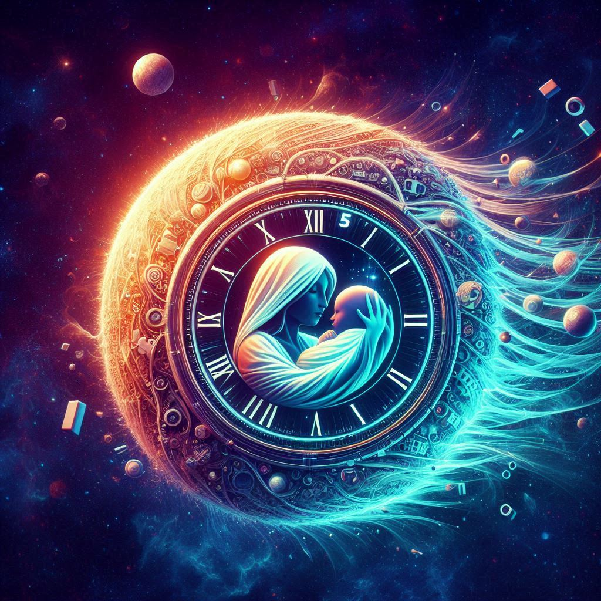

Temporal-Journey
-of-
Eternal-Ticker
(The-Birth-Clock)
"Temporal Journey of Eternal Ticker" is a captivating and thought-provoking name. Let's delve into its
significance and meaning:
The Birth Clock
It is a just a normal runnig timer, but special for me because it starts ticking when I was born.
Temporal Journey of Eternal Ticker(The Birth Clock) gives me exact numbers of since when
I
EXIST IN THIS UNIVERSE.

-
- Temporal Journey:
- Temporal: Refers to time, the ever-flowing river of moments that shape our existence. It
encapsulates our experiences, memories, and the unfolding of events.
- Journey: Implies movement, progression, and exploration. Life itself is a journey—a passage
through time.
-
- Eternal Ticker:
- Eternal: Beyond the confines of time. It transcends the fleeting nature of our mortal lives.
Eternal signifies permanence, something that endures beyond the temporal.
- Ticker: Evokes the idea of a clock or timepiece. It's the heartbeat of existence, the
rhythmic pulse that measures our days.
-
- Combined Meaning:
- Temporal Journey: The voyage through our finite existence, marked by milestones, memories,
and growth. It's the exploration of our personal timeline.
- Eternal Ticker: The cosmic clock that ticks beyond our individual lives—a reminder of
something greater, timeless, and eternal.
-
- Philosophical Reflections:
- T. S. Eliot's Influence:
In T. S. Eliot's "Four Quartets," he grapples with time,
permanence, and human reality. Eliot suggests that only the present moment truly exists, and
what might have been remains speculative. Our journey through time is both personal and
universal.
- Hierarchical Ordering:
Eliot recognizes a hierarchy: our lived experiences are mere
semblances of deeper reality. The eternal underpins our temporal existence.
- Biblical Perspective:
The name echoes biblical themes—our earthly journey toward an
eternal destination. It reminds us that our choices matter beyond the ticking clock of life.
-
- Emotional Resonance:
- Hope: Despite life's impermanence, the Eternal Ticker offers hope. It suggests that our
journey connects to something timeless.
- Reflection: We contemplate our past, present, and future—a pilgrimage toward eternity.
In summary, "Temporal Journey of Eternal Ticker" encapsulates the human experience: our fleeting moments
within the grand tapestry of existence. It invites us to explore, reflect, and find meaning beyond the
ticking seconds. 🌟⏰✨